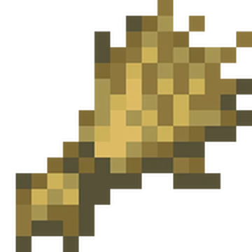

GrainCraft
Inicio
Granjas de Comida
Granjas de Materiales Básicos
Granjas Obligatorias
Welcome. Aquí encontraras las MEJORES GRANJAS para tu Mundo Técnico de Minecraft
Granjas de Comida

Granjas de Materiales Básicos
Granjas de Materiales Obligatorios


_JE3_BE3.png)